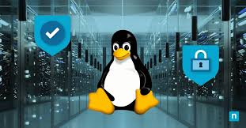

Uso de GitHub en proyectos colaborativos
Aprende cómo utilizar GitHub para gestionar proyectos colaborativos, incluyendo control de versiones, pull requests y revisión de código.
Fecha: 15 de marzo de 2023
Horario: 10:00 AM - 12:00 PM

Las conferencias de la Universidad Autónoma de Managua (UAM) son un evento anual que reúne a destacados profesionales, académicos, estudiantes y entusiastas de diversas disciplinas para compartir conocimientos, experiencias y perspectivas sobre temas de gran relevancia en el mundo actual. Estas conferencias están diseñadas para fomentar el aprendizaje, la innovación y el intercambio de ideas, proporcionando un espacio único donde los asistentes pueden interactuar con expertos de renombre y explorar las últimas tendencias y avances en sus respectivos campos.
Durante el evento, se llevan a cabo una variedad de actividades, incluyendo talleres prácticos, paneles de discusión, presentaciones magistrales y exposiciones de proyectos innovadores. Los participantes tienen la oportunidad de aprender de líderes de la industria, académicos destacados y emprendedores visionarios que comparten sus conocimientos y experiencias para inspirar a la próxima generación de profesionales. Además, las conferencias ofrecen un entorno propicio para el networking, permitiendo a los asistentes establecer conexiones valiosas y colaborar en iniciativas futuras.
Este año, las conferencias de la UAM se centran en temas clave como la tecnología, la medicina, el marketing y el derecho, abordando los desafíos y oportunidades que enfrentan estas disciplinas en un mundo en constante evolución. Desde la inteligencia artificial y su impacto en la sociedad, hasta los avances en la medicina moderna, las estrategias de marketing digital y las implicaciones legales de las nuevas tecnologías, las conferencias ofrecen una visión integral de los temas más relevantes y actuales.
La UAM se enorgullece de ser un centro de excelencia académica y un catalizador para el desarrollo profesional y personal de sus estudiantes y la comunidad en general. Las conferencias son una extensión de este compromiso, proporcionando una plataforma para el aprendizaje continuo y el crecimiento intelectual. No importa si eres un estudiante, un profesional en activo o simplemente alguien interesado en expandir sus horizontes, las conferencias de la UAM tienen algo valioso que ofrecer para todos.
Aprende cómo utilizar GitHub para gestionar proyectos colaborativos, incluyendo control de versiones, pull requests y revisión de código.
Fecha: 15 de marzo de 2023
Horario: 10:00 AM - 12:00 PM
Descubre cómo Docker puede simplificar la configuración de entornos de desarrollo y mejorar la portabilidad de tus aplicaciones.
Fecha: 16 de marzo de 2023
Horario: 2:00 PM - 4:00 PM

Aprende los fundamentos para configurar y administrar servidores Linux, incluyendo instalación, configuración de servicios y seguridad básica.
Fecha: 17 de marzo de 2023
Horario: 9:00 AM - 11:00 AM
